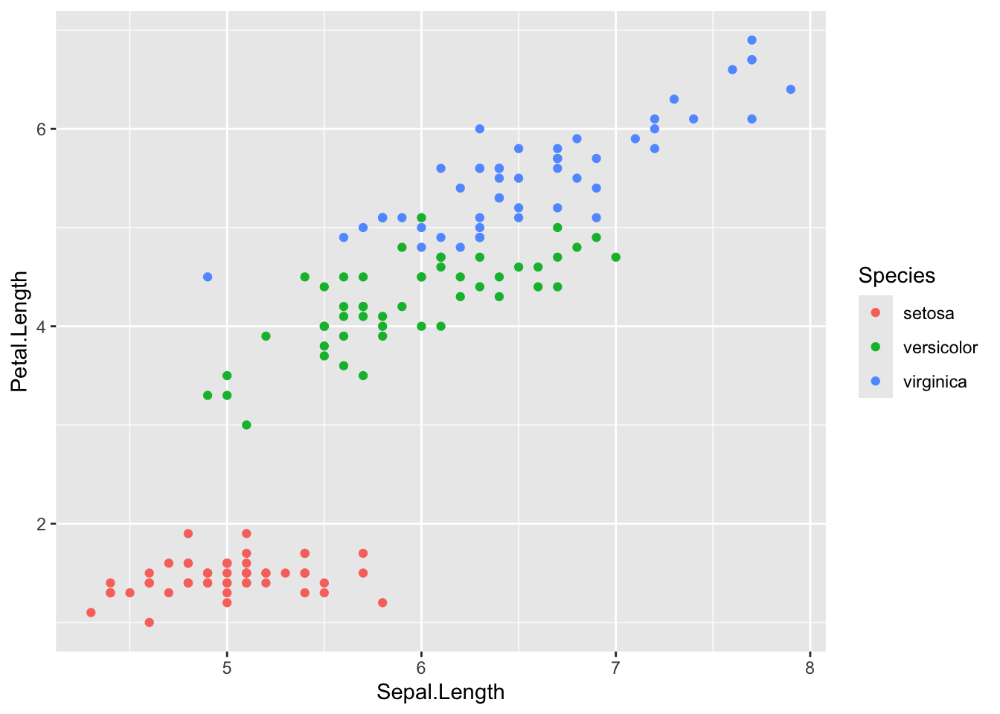

── Attaching core tidyverse packages ──────────────────────── tidyverse 2.0.0 ──
✔ dplyr 1.1.4 ✔ readr 2.1.5
✔ forcats 1.0.0 ✔ stringr 1.5.1
✔ ggplot2 3.5.1 ✔ tibble 3.2.1
✔ lubridate 1.9.3 ✔ tidyr 1.3.1
✔ purrr 1.0.2
── Conflicts ────────────────────────────────────────── tidyverse_conflicts() ──
✖ dplyr::filter() masks stats::filter()
✖ dplyr::lag() masks stats::lag()
ℹ Use the conflicted package (<http://conflicted.r-lib.org/>) to force all conflicts to become errors
Load data
The iris dataset is a widely-used dataset in data science, containing 150 observations of iris flowers with features like sepal length, sepal width, petal length, and petal width. It includes three species: Setosa, Versicolor, and Virginica, making it ideal for classification tasks and data visualization.
# Define 5 colors and their respective ratiosset.seed(123) # For reproducibilitycolors <-c(rep("Red", 50), # 50 rows with Redrep("Blue", 30), # 30 rows with Bluerep("Yellow", 30), # 30 rows with Yellowrep("Green", 20), # 20 rows with Greenrep("Purple", 20)) # 20 rows with Purple# Shuffle the colors to mix them randomlycolors <-sample(colors)# Add the 'Flower.Color' column to the iris datasetiris$Flower.Color <- colors# View the first few rows to check the resulthead(iris)
Sepal.Length Sepal.Width Petal.Length Petal.Width Species Flower.Color
1 5.1 3.5 1.4 0.2 setosa Red
2 4.9 3.0 1.4 0.2 setosa Red
3 4.7 3.2 1.3 0.2 setosa Green
4 4.6 3.1 1.5 0.2 setosa Red
5 5.0 3.6 1.4 0.2 setosa Purple
6 5.4 3.9 1.7 0.4 setosa Purple
ggplot2: The basic concepts
This is the starting point of a ggplot. The dataframe and the columns we wish to plot are defined. We have not specified what type of plot we want, hence an empty plot is produced.
A scatter plot is made with the geom_point function and is used to get an overview over the relationship between two numeric variables. Here we see the relationship between sepal length and width.
ggplot(iris, # dataframe aes(x = Sepal.Length, # x-valuey = Petal.Length)) +# y-valuegeom_point() # type of plot
Change color of entire plot by setting it outsideaes().
ggplot(iris, aes(x = Sepal.Length, y = Petal.Length)) +geom_point(color ='hotpink')
Scatter plot with geom_point with color stratification
To change colors based on a feature, you need to set it insideaes(). Here we see the relationship between sepal length and width colored by species.
ggplot(iris, aes(x = Sepal.Length, y = Petal.Length, color = Species)) +geom_point()

Boxplot with geom_histogram
Boxplots are great to get an overview of continues variables and spot outliers. Can be shown on either axis (x and y).
ggplot(iris, aes(y = Sepal.Length, x = Species)) +geom_boxplot()
… or color.
ggplot(iris, aes(y = Sepal.Length, fill = Species)) +geom_boxplot()
Violin plot with geom_violin
A violin plot shows the distribution of a continuous variable across different categories, combining the features of a box plot and a density plot. Also, the labels can be edited.
ggplot(iris, aes(y = Sepal.Length, x = Species)) +geom_violin() +labs(y ='Sepal Length', x ='Flower Species', title ='Violin plot of sepal length stratisfied by flower species')
Histogram with geom_histogram
Histogram shows the distribution of a continuous variable. You will sometimes get a message that suggests to select another binwidth. Do what is says and you will often get nicer plot (something nothing changes).
`stat_bin()` using `bins = 30`. Pick better value with `binwidth`.
# geom_histogram(binwidth = 0.5)
Bar chart with geom_bar
A bar chart is made with the geom_bar function and is used to get an overview over the distribution of a single categorical variable, e.g. Flower.Color in this instance. Here we see the number of flowers of each Flower.Color. Notice that the Flower.Colors are sorted alphabetically.
# Save plot in pp <-ggplot(iris, aes(x = Flower.Color)) +geom_bar() # Show pp
# Show p with new labels p +labs(x ='Flower Color', y ='Count')
# Show p (nothing has changed)p
# Save p with new lables in p (overwrite / reassign)p <- p +labs(x ='Flower Color', y ='Count')# Show p (lables have changed)p
Color by species. The bars are stacked by default.
ggplot(iris, aes(x = Flower.Color, fill = Species)) +geom_bar()
Add position = "dodge" for bars to be placed next to each other.
ggplot(iris, aes(x = Flower.Color, fill = Species)) +geom_bar(position ="dodge")
Add position = "fill" for bars to be normalized such that heights of the bars to represent percentages rather than counts.
ggplot(iris, aes(x = Flower.Color, fill = Species)) +geom_bar(position ="fill") +theme_bw()
# theme_classic() # theme_minimal()# theme_dark()
Using facet_wrap if you want a plot to be split up according to a categorical variable.
(Should we exclude this? Is it too advanced? Is it used in the exercises?) We can order the columns such that the count goes from lowest to highest. This is actually not that easy in R.
First, we see that the class of the Flower.Color is character. Characters are always sorted alphabetically like we saw above.
class(iris$Flower.Color)
[1] "character"
Extract the number of flowers for each Flower.Color.
Now we do the same plot as before and we see that the order has changed to range from largest to smallest Flower.Colors group. The plot is saved in the variable p.
p <-ggplot(iris, # dataframe aes(x = Flower.Color)) +# x-valuegeom_bar() # type of plot p
We can also flip the chart. We update the plot, p, be reassignment.
p <- p +coord_flip()
Since we are working with colors, we can change the colors of the bars to match the groups.
# Define color palettecolor_palette <-c("Red"="red", "Blue"="blue", "Yellow"="yellow", "Green"="green", "Purple"="purple")p <- p +aes(fill = Flower.Color) +# add the fill ascetics scale_fill_manual(values = color_palette) # set the fill color according to the color palette
# A tibble: 5 × 2
Flower.Color mean_Sepal.Length
<fct> <dbl>
1 Red 5.91
2 Blue 6.02
3 Yellow 5.75
4 Green 5.92
5 Purple 5.48
A bar chart with geom_bar is used to get an overview over the distribution of a categorical variable relative to a continues variable. Here we see the average Sepal.Length of the flowers for each Flower.Color.
ggplot(mean_sepal_length_pr_color, # dataframe aes(x = Flower.Color, # x-valuey = mean_Sepal.Length)) +# y-valuegeom_col() # type of plot